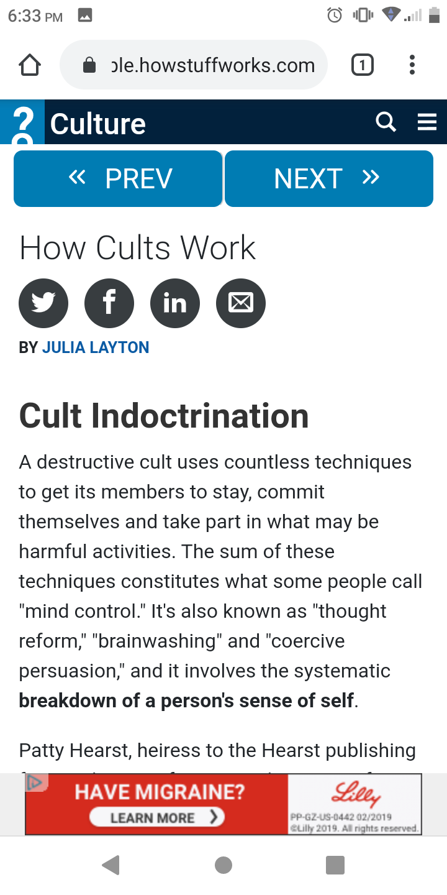

3 Principles of Design
Rule of Thirds
The rule of thirds is a principle of design that says the best pictures or designs
have stuff taking up a page in thirds (such as 1/3 or 2/3), or that key elements of
a page land on intersections of an even 3x3 grid.
The organization I found that represented this rule best was How Stuff Works, a
website known for informational articles on how stuff works in many catagories,
such as Culture, Home & Garden, Health, Science, and Adventure. You can find
them here.

In the image shown, the links to the social media are next to an intersection
of a 3x3 grid, and the body of the article takes up 2/3rds of the page, while
the heading takes up 1/3rd.
PARC: Contrast
Contrast is a principle of design that says that opposing colors draw the
eye. This does not only apply to colors, but elements like size, font family,
spacing, and even emotions.
The organization I found that demonstrated
this principle well was University View's home page, which can be found
here. University View is an
apartment complex for BYU-I students.
 The dark backround gives a nice contrast with the white text.
The dark backround gives a nice contrast with the white text.
PARC: Repetition
Last but not least is repatition. Repatition is a principle of design that
states that repeating elements on a page adds unity and improves the design.
For example, all links having the same format, blue and underlined.
The page that demonstrated this clearly is the Amazon home page.
Each member of the navigation bar has the same format, and the color yellow
is repeated.